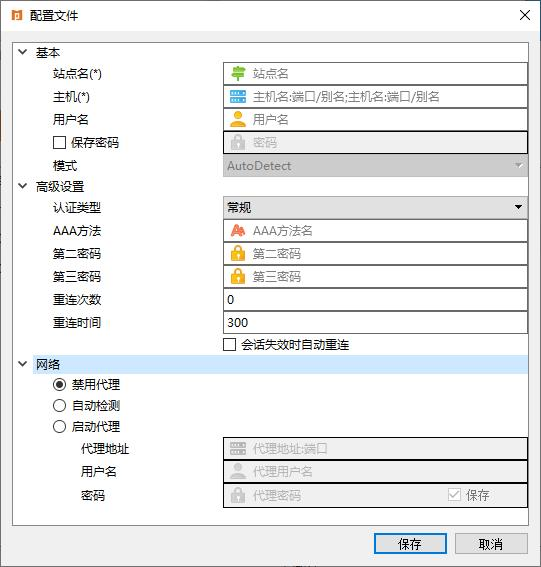

Array MotionPro客户端
目录
关于Array MotionPro客户端
Array MotionPro客户端是一个和Array AG系列产品配套使用的工具，可以提供一种安全的方式访问网站，网络资源，甚至是敏感的商业数据。这个客户端很容易使用，只需要几步配置，然后点击"开始"菜单的"连接"项建立一条VPN，就可以享受安全的网络体验。
主窗口
客户端的主窗口显示已经添加的所有虚拟站点。如果需要启动VPN，在主窗口选中一个虚拟站点后点击"开始"菜单的"连接"选项。也可以通过在主窗口任何位置单击右键来连接VPN（对于这个操作的详细细节，见"快速启动"）。
菜单
主窗口的菜单提供了可能需要的所有功能。
开始
这个菜单提供了有关VPN的基本操作。
连接
点击这个菜单项来连接一个选中的虚拟站点。如果一个站点都没选，那么将会连接默认站点。
断开
连接成功后，点击这个菜单项来断开VPN。
状态
连接成功后，通过点击这个菜单项来查看VPN的状态。
选项
点击这个菜单项进行VPN的高级设置。
隧道
点击这个菜单项设置VPN隧道协议和SSL协议版本。VPN隧道协议支持三个选项："UDP"、"TCP"、默认"。SSL协议版本支持四个选项："SM2v11"、"TLSv1"、"TLSv12"、"SSLv3"。
退出
点击这个菜单项来断开当前的连接并关闭VPN客户端。
配置文件
这个菜单提供虚拟站点的管理配置操作。
添加
点击这个菜单项来创建一个配置文件，配置文件记录了有关虚拟站点的信息，例如站点名和站点地址等。
编辑
点击这个菜单项编辑已经存在的配置文件。
删除
点击这个菜单项删除配置文件。
设为默认值
点击这个菜单项设置默认配置文件。启用VPN后，默认配置文件会自动加载。只需要点击"开始"菜单的"连接"项就可以连接默认站点。
探测站点
点击这个菜单项来探测最优站点。探测信息包括站点IP和响应速度。
修改密码
连接成功后，点击这个菜单项来修改密码。
导入
点击这个菜单项从.ini文件中导入配置。
导出
点击这个菜单项将配置导出到.ini文件。
工具
这个菜单为客户端提供了一些有用的工具。
日志级别
点击这个菜单项来设置日志级别，控制保存到日志文件中的信息。
打开日志目录
点击这个菜单项打开保存日志文件的目录。
生成日志
点击这个菜单项来生成日志，将日志文件进行压缩，保存到指定路径中。
ART设备ID
点击这个菜单项来生成ART设备ID。只在Windows系统上支持这个功能。
MotionPro设备ID
点击这个菜单项来生成MotionPro设备ID。只在Windows系统上支持这个功能。
Hardware ID
点击这个菜单项来生成Hardware ID。
修复
点击这个菜单项清除所有DD缓存图标或将VPN恢复到默认设置。
设置远程桌面尺寸
点击这个菜单项来自定义远程桌面的大小以及桌面图标的大小。
帮助
这个菜单提供关于客户端的附加信息。
关于
点击这个菜单项查看软件相关信息。
帮助
点击这个菜单项获取有关如何使用客户端的信息。
在主窗口可以按照如下步骤快速启动VPN：
如果没有可用虚拟站点，要先创建一个虚拟站点。
如下图所示，在主窗口内任何地方单击右键，然后选择"添加"。
客户端将会弹出"配置文件"对话框。你可以在这个对话框配置虚拟站点。在"配置文件"菜单点击"添加"也会弹出这个对话框。
输入所需信息后点击"保存"来增加虚拟站点。
注意: 对于配置指南，详见""管理虚拟站点""。
建立连接。
在成功添加一个虚拟站点后，右键单击虚拟站点然后选择"连接"来创建VPN。
注意: 不正确的网络或虚拟站点配置，可能会导致连接建立失败。发生这类问题时，请联系您的网络管理员或Array客户支持。
VPN建立时，主窗口会显示"正在连接"。如果发生错误，会在窗口的状态栏显示相应提示信息。如果连接成功，Windows客户端会最小化到系统托盘。可以通过点击托盘图标[A]来显示客户端界面。
VPN建立成功后，会显示"已连接"。如果是VPN站点，就会在主窗口显示站点名和站点地址等信息。如果是DesktopDirect站点，就会在主窗口的站点页签下显示站点信息，并在桌面页签下显示远程桌面。
连接建立成功后，点击"开始"菜单下的"状态"可以查看当前VPN的状态、DNS和网络资源。
可以通过在主窗口单击右键来创建，编辑或删除期望的虚拟站点对应的配置文件。
或者，可以使用"配置文件"菜单中的选项来创建，编辑或删除配置文件。
增加虚拟站点
点击"配置文件"菜单中的"添加"，将会弹出"配置文件"对话框（如"快速启动"那一节中的图所示）。
"站点名"和"主机"这两项是必填的。"主机"这一栏需要输入虚拟站点的主机名或IP地址。注意输入的站点名不能和任何一个已经添加的虚拟站点的名字重复。
虚拟站点的默认接口已经被设为443，即SSL连接的默认接口。443是最常见的SSL接口。如果有需要可以修改。注意其他接口可能没有443接口效果好。如果使用一个已经被用于其他用途的接口来建立连接，例如接口80，那么HTTP客户端和SSL客户端都会不工作。为了确保所有功能运行正常，需要设置额外的有关设备和网络的信息，这已经超出了本文档的范畴。
可以展开"高级"节点，然后点击"认证类型"下拉框选择虚拟站点的认证类型。
默认情况下，代理是禁用的，可以“直接”连接到虚拟站点。如果想要使用代理连接到虚拟站点，请展开"网络"节点，如下图所示。

和IE的代理设置一样，需要在"代理地址"文本框中输入代理服务器的IP地址和接口。如果想要使用系统设置，就选择"自动检测"功能。
编辑虚拟站点
编辑虚拟站点的步骤和增加类似。想要编辑虚拟站点，单击右键然后选择"编辑"。或者，在"配置文件"菜单选择"编辑"。之后的步骤和增加站点是相同的。
删除虚拟站点
想要删除虚拟站点，单击右键然后选择"删除"。之后在确认对话框中点击"是"完成删除。在"配置文件"菜单选择"删除"也可以删除站点。
Windows系统上的MotionPro客户端提供了其他高级设置来满足用户需求。在"开始"菜单选择"选项"就可以进行高级设置。"选项"对话框如下图所示。
请注意不合适的设置可能会对网络性能造成严重影响，所以在设置或修改这些选项之前请先咨询网络管理员。

自动登录Windows
如果选择这个复选框并输入用户名和密码，Windows在启动时将自动登录Windows系统。如果选择"自动登录Windows后锁屏"，Windows系统在自动登录之后将会锁住屏幕。
Window启动时自动运行
如果选择这个复选框，在Windows启动时，VPN客户端会根据当前网络环境判断是否自动运行。如果选择"内网和外网"，无论当前网络环境是内网还是外网VPN客户端都会开机自启动。 如果选择"只在外网"，需要在"内网地址"和"端口"中输入一个可以访问的内网地址和端口，只有当前网络环境是外网时VPN客户端才会开机自启动。

运行后自动连接
如果选择这个复选框，在客户端启动时，将会自动连接到虚拟站点。
启用DNS代理
如果选择这个复选框，客户端将会启用DNS代理。默认启用这个功能。
启用高级域名映射
如果选择该复选框，客户端会将Hostmap配置映射到系统文件Hosts，以加快DNS解析过程。该功能默认是禁用的。
启用高级重定向
如果选择该复选框，客户端会将IP地址127.0.0.1加入到本地网卡的DNS服务器列表中（127.0.0.1为主DNS），这样就可以强制转发所有DNS流量到VPN隧道中。该功能默认是禁用的。
虚拟网卡选项
通过"虚拟网卡选项"可以设置"MTU"、"TCP Ack Frequency"和"启动本地网络访问"。
MTU
设置网络环境的最大传输单元。
TCP Ack Frequency
设置TCP ACK的数据包的频率。
启动本地网络访问
当AG服务器开启本地网络访问后，可以通过这个复选框开启/关闭这项功能。
国密SKF证书规则
设置证书规则。支持三个选项："显示最新颁发证书"、"显示有效证书"、"显示所有证书"。
RSA证书存储位置
设置证书存储的位置。支持三个选项："当前用户"、"本地计算机"、"全部"。
如果对于怎样使用Array MotionPro客户端还有任何疑问，或者在使用过程中发现任何问题，随时都可以联系Array的客户支持工程师。我们将会指导您如何使用或者修复问题。始终欢迎您对我们产品和服务的建议。
联系方式
Array Networks, Inc.
1371 McCarthy Blvd.
Milpitas, CA 95035
Phone: (408) 240-8700
Toll Free: 1-866-MY-ARRAY
Fax: (408) 240-8753
Email: info@arraynetworks.net
支持
Toll Free: 1-866-MY-ARRAY
Email: support@arraynetworks.net